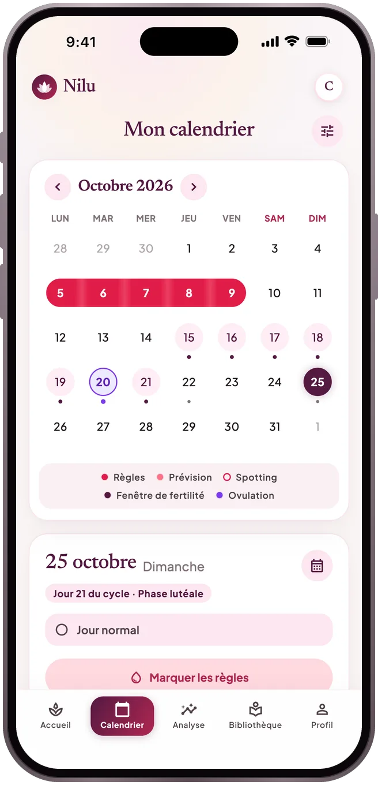
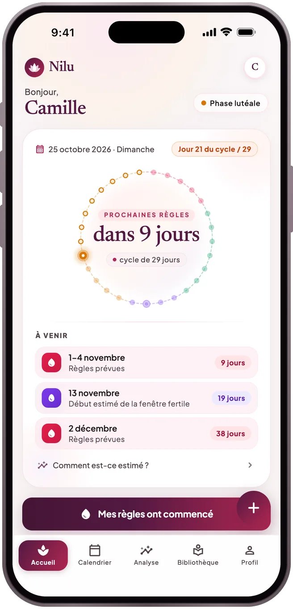
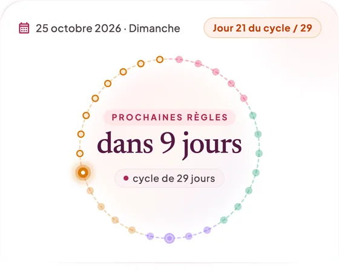
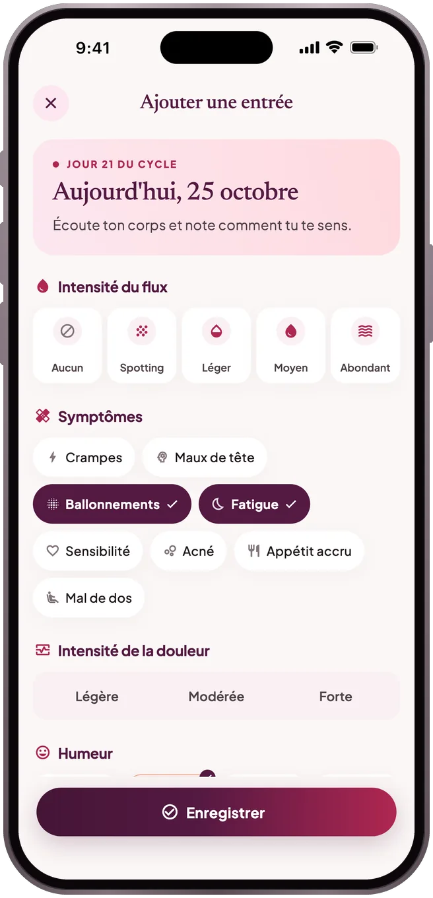
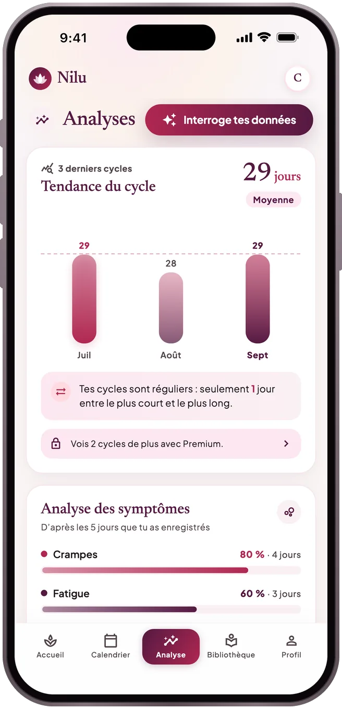
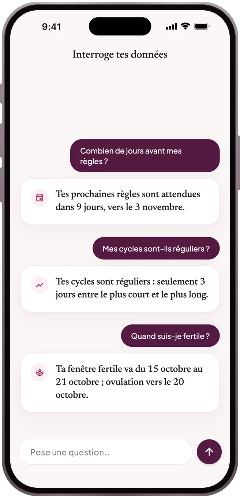
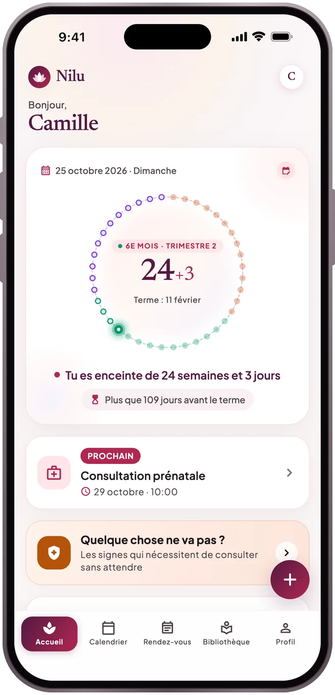
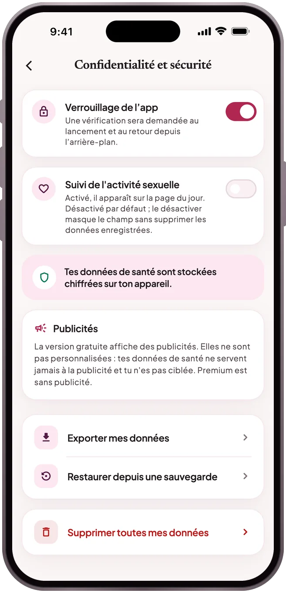

CALENDRIER
Tes prochaines règles, sur une période
Note tes règles dans le calendrier. Nilu affiche les prochaines comme une période probable plutôt qu’une date unique, avec la façon dont elle est calculée et ta fenêtre de fertilité estimée.
Règles · Grossesse · Post-partum
Un suivi serein des règles, de la grossesse et du post-partum. Tout ce que tu notes reste chiffré sur ton téléphone — sans pistage.
Bientôt sur l'App Store et Google Play
Voir comment ça marche


Ce qu'elle fait
CALENDRIER
Note tes règles dans le calendrier. Nilu affiche les prochaines comme une période probable plutôt qu’une date unique, avec la façon dont elle est calculée et ta fenêtre de fertilité estimée.
JOURNAL
Flux, douleur, humeur, symptômes et notes, enregistrés en quelques touches et toujours là quand tu veux revenir en arrière.

ANALYSES
Combien de temps durent tes cycles, sont-ils réguliers, quels symptômes reviennent ? Tout l’historique de tes cycles et un résumé à montrer à ton médecin sont gratuits.

INTERROGE TES DONNÉES
Demande « Dans combien de jours mes règles ? » ou « Mes cycles sont-ils réguliers ? ». Les réponses sont calculées sur ton téléphone à partir des chiffres que tu vois dans l’app : rien n’est envoyé à un modèle d’IA, et rien n’est inventé.

GROSSESSE
Pendant la grossesse et le post-partum : ta semaine et ton jour, rendez-vous et rappels, et les signes d’alerte qui ne doivent pas attendre.

Ton jour du cycle et tes prochaines règles en un coup d’œil ; le widget et les rappels sont préparés sur ton appareil.
Des articles sourcés sur les règles, la nutrition, la santé mentale et les relations.
Seul l’état de proximité que tu choisis est partagé, avec ton consentement explicite.
Passe à un nouveau téléphone avec une sauvegarde protégée par mot de passe, ou active la synchronisation cloud avec ton compte.
Confidentialité

Sur ton téléphone, chiffrées. Tant que tu n'actives pas la synchronisation cloud, aucune de tes données de santé ne quitte ton appareil ; la fonction partenaire n'envoie que l'état de proximité que tu choisis de partager. Détails dans la Politique de confidentialité.
Sur l'ancien téléphone, crée une sauvegarde avec Profil → Confidentialité et sécurité → Exporter mes données. Sur le nouveau, restaure-la depuis le même écran avec Restaurer depuis une sauvegarde. Ou active la synchronisation dans Profil → Compte et sauvegarde cloud, puis sur le nouveau téléphone touche « Restaurer mes données depuis le cloud » sur l'écran d'accueil et connecte-toi avec le même compte.
Les abonnements sont gérés par le store. Sur iPhone : Réglages → ton nom → Abonnements → Nilu. Sur Android : Google Play → Profil → Paiements et abonnements → Abonnements → Nilu. La résiliation reste active jusqu'à la fin de la période.
Commence sans compte ; connecte-toi avec Apple, Google ou ton e-mail si tu veux une sauvegarde. Tant que tu n’actives pas la synchronisation, tes saisies ne quittent pas ton téléphone.
Nilu ne pose pas de diagnostic, ne prescrit aucun traitement et n'est pas un moyen de contraception. Les prévisions sont calculées à partir de tes saisies passées et restent approximatives.